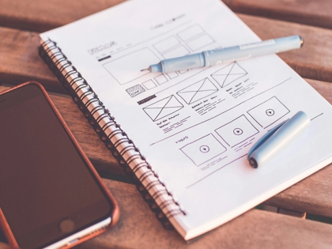
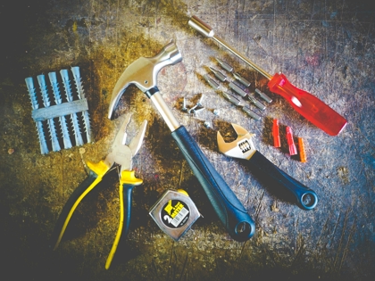
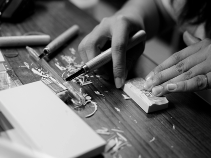

Våra Tjänster
Vi erbjuder ett brett utbud av tjänster inom metallhantverk. Från specialbeställningar till reparationer – vi tar oss an både stora och små projekt.

Specialdesign
Vi skapar unika metallföremål efter dina önskemål, perfekta för gåvor eller personliga projekt.

Reparationer
Skadade smycken eller föremål? Vi återställer dem till sitt ursprungliga skick med omsorg och precision.

Gravering
Gör dina föremål unika med personlig gravering – namn, datum eller något speciellt.